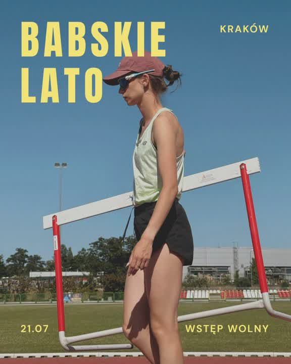
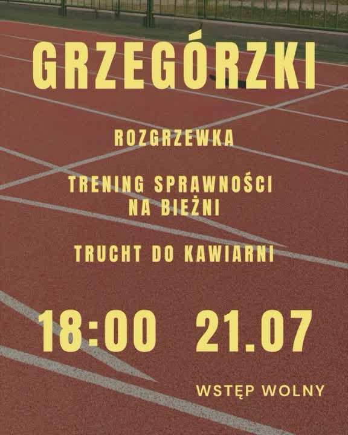

{{POST_TITLE}}
To wydarzenie już się odbyło (21 lipca 2025). Aktualne terminy treningów otwartych znajdziesz w aktualnościach, a stałe treningi grupy Rozbiegane – w ofercie.
Bieganie – gadanie – kawka
Aktualny projekt: Babskie lato.
- Kiedy? 21.07.2025, poniedziałek, 18:00
- Gdzie? Zbiórka przy VIII Liceum Ogólnokształcącym w Krakowie
- Ile potrwa trening? Około 60 minut


Co będziemy robić?
Wykonamy trucht (2–3 km) i ćwiczenia rozgrzewkowe. Następnie sprawność biegacza i doskonalenie techniki biegu. Na koniec przetruchtamy (2–3 km) do kawiarni BOM DIA na ulicy Krakowskiej. Zjemy pyszne pastéis de nata, jeśli zdążymy dotrzeć, zanim wszystkie się rozejdą.
Kto może dołączyć?
Każda kobieta, która chce się poruszać i zrobić sprawnościowy trening biegowy. Celem może być również poznanie innych biegających kobiet lub aktywne spędzenie czasu. Nie musisz być zaawansowaną biegaczką – jeśli jesteś w stanie przebiec 15 minut ciągiem, to sobie poradzisz. Trening skupi się na ćwiczeniach, nigdzie Ci nie uciekniemy. Zaawansowane biegaczki też zapraszamy, nie będziecie się nudzić.
Jak dołączyć?
Zapoznaj się z regulaminem, weź ze sobą koleżankę i przyjdź. Nie musisz się zapisywać, ale zachęcamy do wzięcia udziału w wydarzeniu na Facebooku, gdzie publikujemy szczegóły treningu.